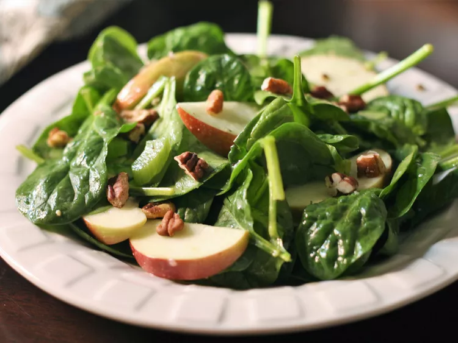

Apple Spinach Salad

Description
The addition of nuts and fruit makes this salad extra special.
Ingredients
- 2 cups baby spinach leaves
- 1 medium apple, sliced
- 2 tablespoons chopped celery
- 2 tablespoons toasted Pecans, chopped
- 2 tablespoons Italian Dressing
Steps
- Toss ingredients with dressing in large bowl.